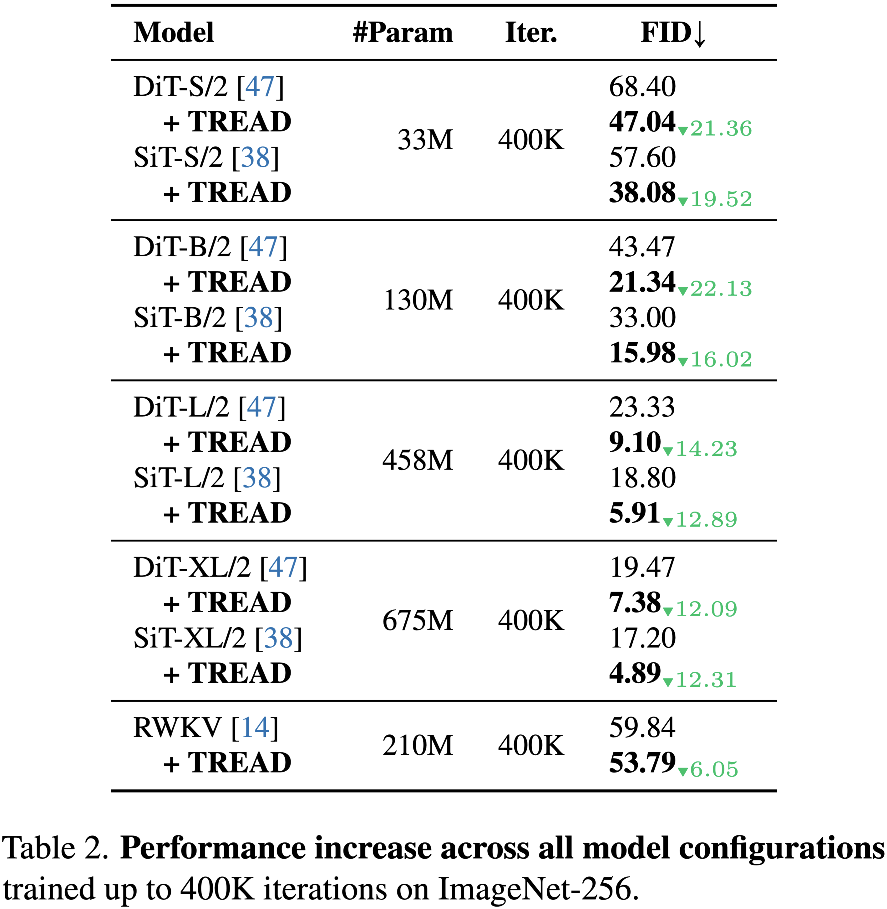

Results
Quantitative Results
We report FID scores across different architectures trained for 400K iterations on ImageNet-256. Our method consistently improves FID across all backbone sizes.


On ImageNet-256 (class-conditional), DiT-XL/2 + TREAD reaches an unguided FID of 3.93 after 400K updates, which is 14x faster than the baseline and 37x faster than DiT's published best checkpoint at 7M steps. Finetuning without routing achieves a final guided FID of 2.09. Furthermore, the same routing idea transfers to state-space models (e.g., RWKV), to 512² resolution, and to the text-to-image benchmark MS-COCO. Additionally, we find it stacks with representation distillation methods like REPA.